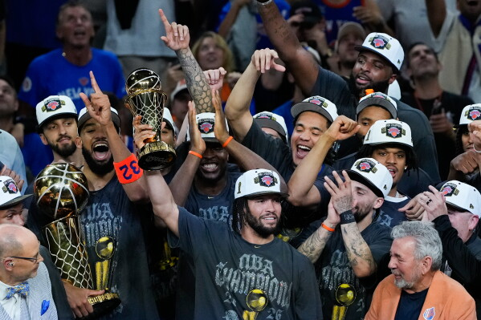

Il Bill Russell NBA Finals Most Valuable Player Award (o semplicemente MVP delle Finals) è il riconoscimento individuale assegnato al miglior giocatore della serie di finale della NBA. Istituito nel 1969 e intitolato alla leggenda Bill Russell a partire dal 2009, viene votato al termine dell'ultima partita di playoff da un pannello di giornalisti e media esperti.
L'ultimo anno il premio è stato assegnato a Jalen Brunson, leader e simbolo della squadra che ha dominato sia la regular season, che i playoff. Nella serie finale contro i San Antonio Spurs, Brunson ha mantenuto una media di oltre 30 punti a partita (toccando i 45 come massimo ed eguagliando il record di punti in trasferta segnati in una finale NBA di Michael Jordan), caricandosi sulle spalle la squadra nei momenti clutch e di difficoltà.
In questa stagione questo non è l'unico premio individuale vinto da Brunson; infatti, gli era già stato assegnato il premio MVP per l'NBA Cup (torneo in-season) e per le finali della Eastern Conference.

Di seguito sono elencati gli ultimi 10 giocatori che hanno vinto il premio MVP delle NBA Finals, con la loro rispettiva squadra

Lebron James, 2020